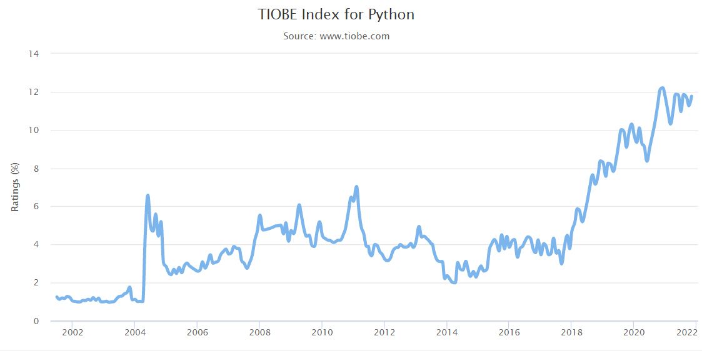

Łatwy w nauce, ma prostą, wręcz intuicyjną składnię (najprościej mówiąc to sposób zapisu poleceń rozumianych przez komputer za pomocą danego języka programowania). Składnia przypomina elementy z „prawdziwego życia”. Słowa kluczowe są więc zrozumiałe dla każdego początkującego, a jednocześnie bardzo bliskie tym występującym w innych językach programowania (dlatego późniejsza „przesiadka” jest prostsza). Gdy wymieniamy listę rzeczy do wykonania często robimy to z pomocą dwukropka i używając wcięć, tak samo jak wydajemy polecenia Pythonowi w blokach kodu. Przy okazji niejako wymusza w nas naukę dobrych nawyków robienia wcięć w kodzie, dzięki czemu kod w Pythonie jest ładny, czytelny i przejrzysty.
Praca z Big Data (zarówno w zbieraniu danych, jak ich analizie, przetwarzaniu, wykorzystaniu) jest przyszłością. Im więcej danych musisz przetworzyć, tym ważniejsze staje się zarządzanie zużywanymi zasobami i wydajność kodu. Python udostępnia generatory zarówno jako wyrażenia, jak i funkcje. Generatory pozwalają na iteracyjne przetwarzanie danych – element po elemencie. Brzmi niezbyt atrakcyjnie, dopóki nie zauważysz, że „normalne” iteracyjne przetwarzanie danych wymaga listy. Lista zajmuje pamięć. Naprawdę duża lista zabiera bardzo dużo pamięci. Generatory umożliwiają pobieranie danych ze źródła po jednym elemencie i przekazywanie ich za pośrednictwem całego łańcucha przetwarzania omijając mechanizm związany z przechowywaniem iterowanej listy.
Python to aktualnie drugi najlepiej opłacany język w USA. Mimo, że te statystyki wciąż nie pokrywają się z trendami w Polsce to programiści Pythona na zarobki narzekać nie mogą.
4. Pracy nie zabraknie
Skoro było o pieniądzach to warto też zwrócić uwagę na wszystkie możliwości jakie daje Python w pracy.
Właściwie możesz w nim napisać wszystko co się marzy i jednocześnie w każdej dziedzinie znajdziesz dla siebie ofertę zatrudnienia.
Z roku na rok zapotrzebowanie na specjalistów Pythona rośnie.